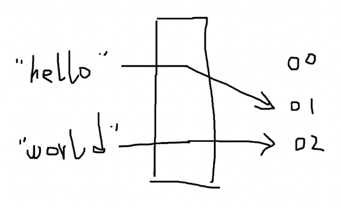

Hash function
Hash function
Hash function 用于处理数据和其 hash values 的映射关系，hash values 是数据类似唯一标识的东西，可以用内存比较小的形式标识数据。hash function 有各种各样的实现，可以认为是一个黑盒子，进去的是 data，出来的是 hash values。

比如，我们可以把字符的 ASCII 码作为字符的 hash values：
HASH("a") = 97
HASH("b") = 98
HASH("c") = 99
HASH("d") = 100
对于 2 个字符的 data，就把两个字符的 ASCII 相加，作为 hash values：
HASH("ab") = 97 + 98 = 195
HASH("cd") = 99 + 100 = 199
但是这样很容易发现存在问题，HASH("ad") == HASH("bc") == 197。对于 3 个、4 个甚至更多字符的情形，hash values 重复的可能性更大。
hash values 是允许重复的，但如果存在大量重复，hash function 也就失去了它的作用和使用场景：如果全部都一样，无法区分，还用 hash values 干嘛？
不幸的是，目前最好的 hash function 也无法避免 hash values 重复的问题，只能尽可能减少 hash values 重复的概率，比如用类似数据库分库分表的方式，给每个字符足够的余量。
我们可以重新设计一下我们的 hash function，在只有 1 个字符的时候，仍然使用 ASCII 作为输出。在有 2 个字符的时候，让 第 1 个字符乘以一个基数，再加上第 2 个字符。由于第 1 个字符在乘以基数后会足够大，无论第 2 个字符是什么，在其基础上加上第 2 个字符的 ASCII 码，应该不会重复。
HASH("ab") = 97 * 1000 + 98 = 97098
HASH("cd") = 99 * 1000 + 100 = 99100
HASH("ad") = 97 * 1000 + 100 = 97100
HASH("cd") = 98 * 1000 + 99 = 98099
这样至少解决了 2 个字符 hash values 重复的问题。
推广到更一般的场景，在面对可能很多字符的情况下，基数使用质数以避免累加造成的重复，为了保证基数足够大，使用质数的不同次方分别作为每个字符的基数，公式为：
hashCodes = char1 * base^(l-1) + char2 * base^(l-2) + ...
hashCodes 是输出的 hash values，char1 是第 1 个字符，char2 是第 2个字符，base 是基数，l 指字符串的长度。对于 3 个字符长度的字符串，第 1 个字符的基数就是质数的 2 次方，第 2 个字符的基数是质数的 1 次方，第 3 个字符是 0 次方，以此类推。
如果质数选择为 31，hash function 的实现为：
public static int hashCode(byte[] value) {
int h = 0;
for(int i = 0; i < value.length; ++i) {
h = 31 * h + value[i];
}
return h;
}
也许具体的代码不是完全符合直觉，但你可以相信，和上面描述的公式是一致的。
hashCode("a") = 97
hashCode("ab") = 97 * 31 + 98 = 3105
hashCode("abc") = 97*31^2 + 98*31 + 99 = 96354
这就是 JDK (Java Development Kit) 中 hashCode 的实现方式。
Cryptographic hash function (CHF)
不难发现的是， hash function 比较容易根据 hash values 反推出原始的 data 是什么。我们可以写出这样的程序，假设我们已经知道字符长度是 2，由于字符使用 ASCII 编码，范围在 0 ~ 255，因此设 x 和 y 两个变量，枚举所有符合目标 hash values 的情况：
public static String deHashCode(int code) {
for (int x = 0; x <= 255; x++) {
int y = code - 31 * x;
if (y < 0 || y > 255) {
continue;
}
System.out.println(((char) x)+","+((char) y));
}
return "";
}
比如当 hashCode = 3105，得到的输出是：
\,ý
],Þ
^,¿
_,
`,
a,b
b,C
c,$
d,
原始数据 ab 就出现在了为数不多不多的可能性中。
那么有没有办法减少 hash values 推出原始 data 的方法？在 Public-key cryptography 中 % 可是起到了很大的作用。hash function 也可以与一些加密算法的原理结合。
cryptographic 是 hash function 的修饰词，即使用了加密算法的 hash function。

md5 是使用非常广泛也接近过时的一种 cryptographic hash function，可以把任意长度的 data 计算输出为 128 bit 的 hash values。
md5("a") = 0cc175b9c0f1b6a831c399e269772661
md5("ab") = 187ef4436122d1cc2f40dc2b92f0eba0
md5 的加密原理步骤很多，是一种不可逆的、单向的 hash function，无法轻易根据 hash values 得到 data。md5 的输入可以是任意大小的，1 GB 的二进制文件也可以hash 为 128 bit 的字符串。
md5 之外，SHA-1 的安全性更高，BLAKE2 的计算速度更快，它们都是典型的 cryptographic hash function。